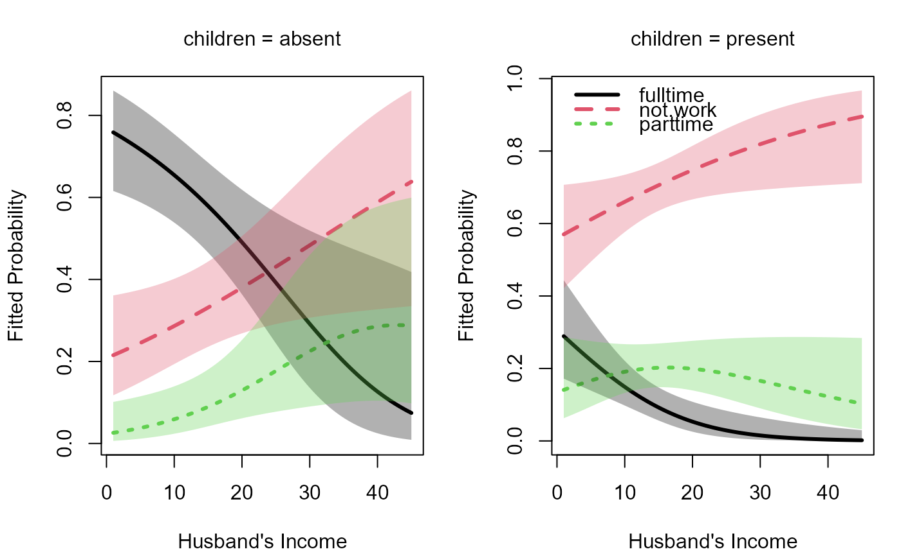

Fit a related set of binary logit models via the glm
function to nested dichotomies, comprising a model for the polytomy.
A polytomous response with \(m\) categories can be analyzed using
\(m-1\) binary logit comparisons. When these comparisons are nested,
the \(m-1\) sub-models are statistically independent. Therefore,
the likelihood chi-square statistics for the sub-models are additive
and give overall tests for a model for the polytomy.
This method was introduced by Fienberg (1980),and subsequently illustrated by
Fox(2016) and Friendly & Meyer (2016).
dichotomy and logits are helper functions to construct the dichotomies.
continuationLogits constructs a set of \(m-1\) logit comparisons, called
continuation logits,
for an ordered response. With \(m=4\) levels, say, A, B, C, D,
considered low to high:
The first contrasts B, C, D against A.
The second ignores A and contrasts C, D against B.
The second ignores A, B and contrasts D against C.
Usage
nestedLogit(formula, dichotomies, data, subset = NULL, contrasts = NULL, ...)
logits(...)
dichotomy(...)
continuationLogits(levels, names, prefix = "above_")Arguments
- formula
a model formula with the polytomous response on the left-hand side and the usual linear-model-like specification on the right-hand side.
- dichotomies
specification of the logits for the nested dichotomies, constructed by the
logitsanddichotomyfunctions, orcontinuationLogits. Alternatively, thedichotomiescan be specified as a nested (i.e., recursive) list, the elements of which can be given optional names. See Details.- data
a data frame with the data for the model; unlike in most statistical modeling functions, the
dataargument is required. Cases withNAs in any of the variables appearing in the model formula will be removed with a Note message.- subset
a character string specifying an expression to fit the model to a subset of the data; the default,
NULL, uses the full data set.- contrasts
an optional list of contrast specification for specific factors in the model; see
lmfor details.- ...
for
nestedLogit, optional named arguments to be passed toglm; forlogits, definitions of the nested logits---with each named argument specifying a dichotomy; fordichotomy, two character vectors giving the levels defining the dichotomy; the vectors can optionally be named.- levels
A character vector of set of levels of the variables or a number specifying the numbers of levels (in which case, uppercase letters will be use for the levels).
- names
Names to be assigned to the dichotomies; if absent, names will be generated from the levels.
- prefix
a character string (default:
"above_") used as a prefix to the names of the continuation dichotomies.
Value
nestedLogit returns an object of class "nestedLogit" containing
the following elements:
models, a named list of (normally) \(m - 1\)"glm"objects, each a binary logit model for one of the \(m - 1\) nested dichotomies representing the \(m\)-level response.formula, the model formula for the nested logit models.dichotomies, the"dichotomies"object defining the nested dichotomies for the model.data.name, the name of the data set to which the model is fit, of class"name".data, the data set to which the model is fit.subset, a character representation of thesubsetargument or"NULL"if the argument isn't specified.contrasts, thecontrastsargument orNULLif the argument isn't specified.contrasts.printa character representation of thecontrastsargument or"NULL"if the argument isn't specified.
logits and continuationLogits return objects of class "dichotomies"
and c("continuationDichotomies" "dichotomies"), respectively, which are two-elements lists,
each element containing a list of two character vectors representing a dichotomy.
dichotomy returns a list of two character vectors representing a dichotomy.
Details
A dichotomy for a categorical variable is a comparison of one subset of levels against another subset. A set of dichotomies is nested, if after an initial dichotomy, all subsequent ones are within the groups of levels lumped together in earlier ones. Nested dichotomies correspond to a binary tree of the successive divisions.
For example, for a 3-level response, a first
dichotomy could be {A}, {B, C} and then the second one would be
just {B}, {C}. Note that in the second dichotomy, observations
with response A are treated as NA.
The function dichotomy constructs a single dichotomy in the required form,
which is a list of length 2 containing two character vectors giving the levels
defining the dichotomy. The function logits is used to create the
set of dichotomies for a response factor. Alternatively, the nested dichotomies can be
specified more compactly as a nested (i.e., recursive) list with optionally named
elements; for example,
list(air="plane", ground=list(public=list("train", "bus"), private="car")).
The function continuationLogits provides a
convenient way to generate all dichotomies for an ordered response.
For an ordered response with \(m=4\) levels, say, A, B, C, D,
considered low to high:
The dichotomy first contrasts B, C, D against A.
The second ignores A and contrasts C, D against B.
The second ignores A, B and contrasts D against C.
References
S. Fienberg (1980). The Analysis of Cross-Classified Categorical Data, 2nd Edition, MIT Press, Section 6.6.
J. Fox (2016), Applied Linear Regression and Generalized Linear Models, 3rd Edition, Sage, Section 14.2.2.
J. Fox and S. Weisberg (2011), An R Companion to Applied Regression, 2nd Edition, Sage, Section 5.8.
M. Friendly and D. Meyers (2016), Discrete Data Analysis with R, CRC Press, Section 8.2.
Examples
data("Womenlf", package = "carData")
#' Use `logits()` and `dichotomy()` to specify the comparisons of interest
comparisons <- logits(work=dichotomy("not.work",
working=c("parttime", "fulltime")),
full=dichotomy("parttime", "fulltime"))
print(comparisons)
#> work: {not.work} vs. working{parttime, fulltime}
#> full: {parttime} vs. {fulltime}
m <- nestedLogit(partic ~ hincome + children,
dichotomies = comparisons,
data=Womenlf)
print(summary(m))
#> Nested logit models: partic ~ hincome + children
#> <environment: 0x00000267a4eb02a8>
#>
#> Response work: {not.work} vs. working{parttime, fulltime}
#> Call:
#> glm(formula = work ~ hincome + children, family = binomial, data = Womenlf,
#> contrasts = contrasts)
#>
#> Deviance Residuals:
#> Min 1Q Median 3Q Max
#> -1.6767 -0.8652 -0.7768 0.9292 1.9970
#>
#> Coefficients:
#> Estimate Std. Error z value Pr(>|z|)
#> (Intercept) 1.33583 0.38376 3.481 0.0005 ***
#> hincome -0.04231 0.01978 -2.139 0.0324 *
#> childrenpresent -1.57565 0.29226 -5.391 7e-08 ***
#> ---
#> Signif. codes: 0 '***' 0.001 '**' 0.01 '*' 0.05 '.' 0.1 ' ' 1
#>
#> (Dispersion parameter for binomial family taken to be 1)
#>
#> Null deviance: 356.15 on 262 degrees of freedom
#> Residual deviance: 319.73 on 260 degrees of freedom
#> AIC: 325.73
#>
#> Number of Fisher Scoring iterations: 4
#>
#> Response full: {parttime} vs. {fulltime}
#> Call:
#> glm(formula = full ~ hincome + children, family = binomial, data = Womenlf,
#> contrasts = contrasts)
#>
#> Deviance Residuals:
#> Min 1Q Median 3Q Max
#> -2.4047 -0.8678 0.3949 0.6213 1.7641
#>
#> Coefficients:
#> Estimate Std. Error z value Pr(>|z|)
#> (Intercept) 3.47777 0.76711 4.534 5.80e-06 ***
#> hincome -0.10727 0.03915 -2.740 0.00615 **
#> childrenpresent -2.65146 0.54108 -4.900 9.57e-07 ***
#> ---
#> Signif. codes: 0 '***' 0.001 '**' 0.01 '*' 0.05 '.' 0.1 ' ' 1
#>
#> (Dispersion parameter for binomial family taken to be 1)
#>
#> Null deviance: 144.34 on 107 degrees of freedom
#> Residual deviance: 104.49 on 105 degrees of freedom
#> (155 observations deleted due to missingness)
#> AIC: 110.49
#>
#> Number of Fisher Scoring iterations: 5
#>
print(car::Anova(m))
#>
#> Analysis of Deviance Tables (Type II tests)
#>
#> Response work: {not.work} vs. working{parttime, fulltime}
#> LR Chisq Df Pr(>Chisq)
#> hincome 4.8264 1 0.02803 *
#> children 31.3229 1 2.185e-08 ***
#> ---
#> Signif. codes: 0 '***' 0.001 '**' 0.01 '*' 0.05 '.' 0.1 ' ' 1
#>
#>
#> Response full: {parttime} vs. {fulltime}
#> LR Chisq Df Pr(>Chisq)
#> hincome 8.981 1 0.002728 **
#> children 32.136 1 1.437e-08 ***
#> ---
#> Signif. codes: 0 '***' 0.001 '**' 0.01 '*' 0.05 '.' 0.1 ' ' 1
#>
#>
#> Combined Responses
#> LR Chisq Df Pr(>Chisq)
#> hincome 13.808 2 0.001004 **
#> children 63.459 2 1.66e-14 ***
#> ---
#> Signif. codes: 0 '***' 0.001 '**' 0.01 '*' 0.05 '.' 0.1 ' ' 1
coef(m)
#> work full
#> (Intercept) 1.33582979 3.4777735
#> hincome -0.04230843 -0.1072679
#> childrenpresent -1.57564843 -2.6514557
# equivalent;
nestedLogit(partic ~ hincome + children,
dichotomies = list("not.work",
working=list("parttime", "fulltime")),
data=Womenlf)
#> Nested logit models: partic ~ hincome + children
#> <environment: 0x00000267a4eb02a8>
#>
#> Call: glm(formula = not.work_v_working ~ hincome + children, family = binomial,
#> data = Womenlf, contrasts = contrasts)
#>
#> Coefficients:
#> (Intercept) hincome childrenpresent
#> 1.33583 -0.04231 -1.57565
#>
#> Degrees of Freedom: 262 Total (i.e. Null); 260 Residual
#> Null Deviance: 356.2
#> Residual Deviance: 319.7 AIC: 325.7
#>
#> Call: glm(formula = parttime_v_fulltime ~ hincome + children, family = binomial,
#> data = Womenlf, contrasts = contrasts)
#>
#> Coefficients:
#> (Intercept) hincome childrenpresent
#> 3.4778 -0.1073 -2.6515
#>
#> Degrees of Freedom: 107 Total (i.e. Null); 105 Residual
#> (155 observations deleted due to missingness)
#> Null Deviance: 144.3
#> Residual Deviance: 104.5 AIC: 110.5
# get predicted values
new <- expand.grid(hincome=seq(0, 45, length=10),
children=c("absent", "present"))
pred.nested <- predict(m, new)
# plot
op <- par(mfcol=c(1, 2), mar=c(4, 4, 3, 1) + 0.1)
plot(m, "hincome", list(children="absent"),
xlab="Husband's Income", legend=FALSE)
plot(m, "hincome", list(children="present"),
xlab="Husband's Income")

par(op)
continuationLogits(c("none", "gradeschool", "highschool", "college"))
#> above_none: {none} vs. {gradeschool, highschool, college}
#> above_gradeschool: {gradeschool} vs. {highschool, college}
#> above_highschool: {highschool} vs. {college}
continuationLogits(4)
#> above_A: {A} vs. {B, C, D}
#> above_B: {B} vs. {C, D}
#> above_C: {C} vs. {D}